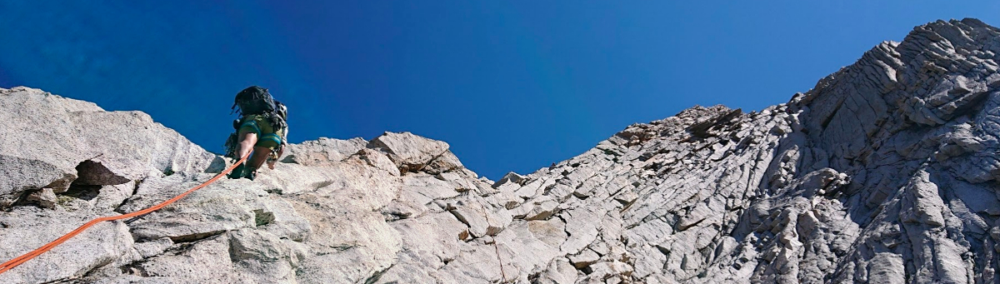
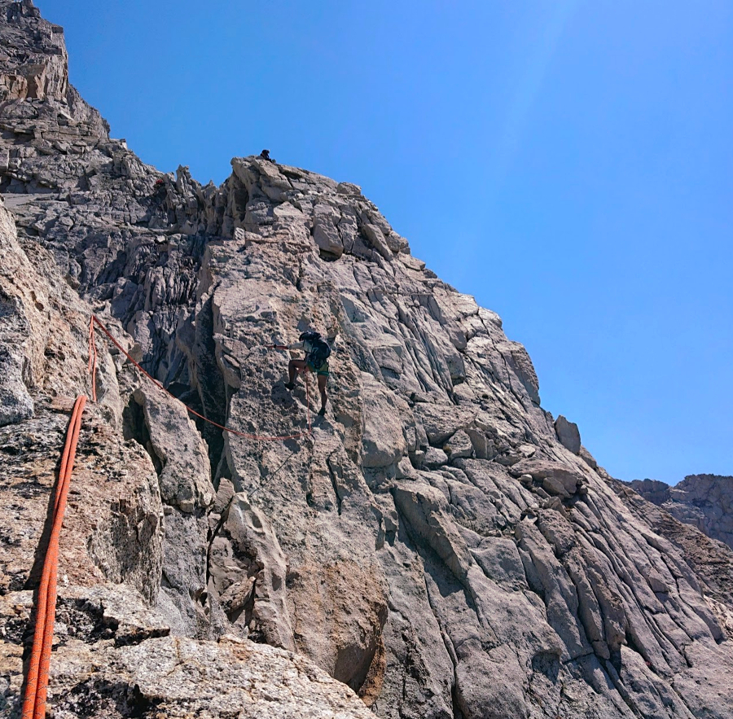
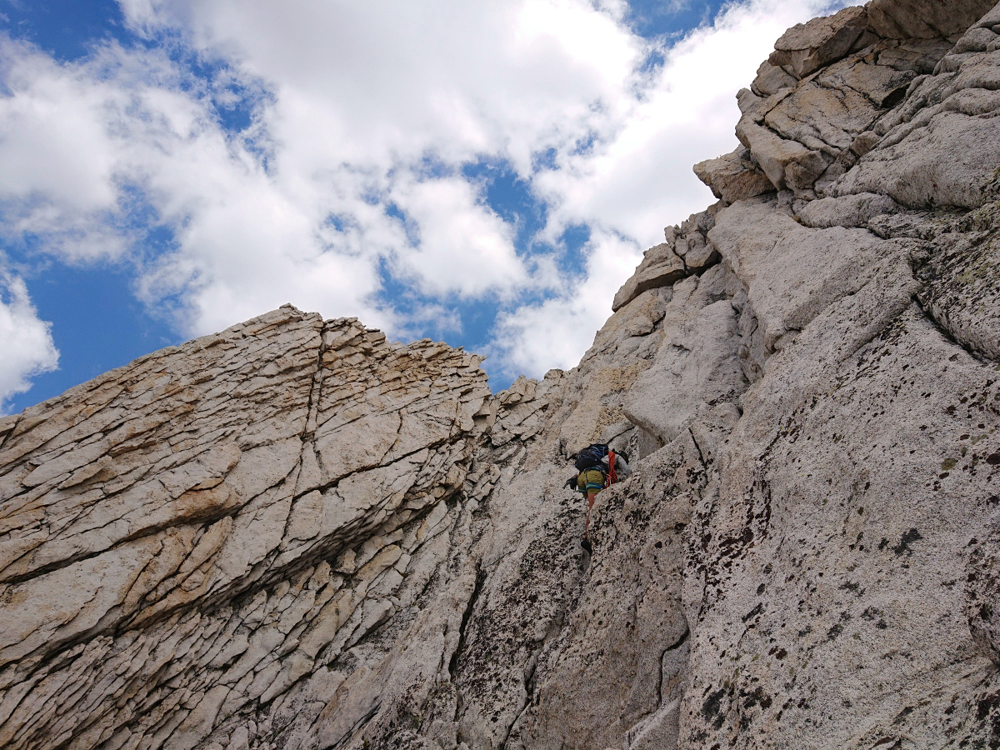
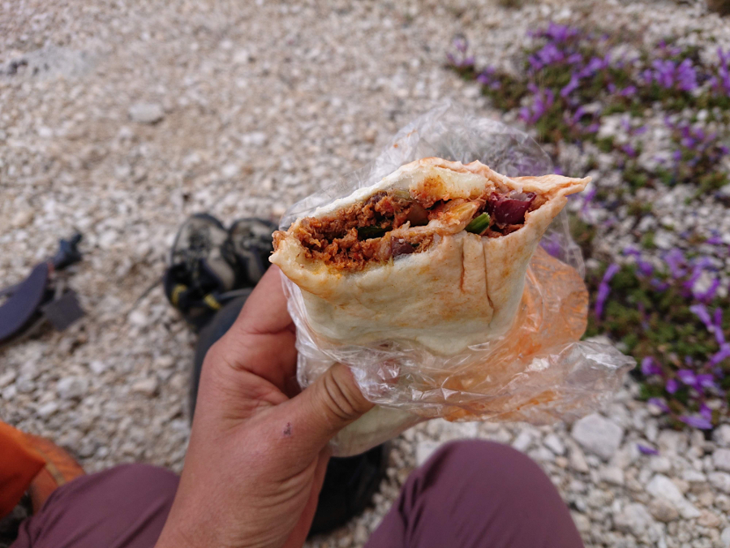
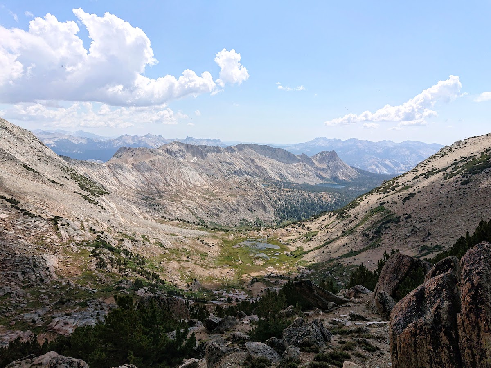

West Ridge of Conness
In these weird COVID times, the leadership at my job decided there should be at least one company-wide 3-day weekend per month, and if the federal holiday calendar didn’t provide, they would manufacture it. In search of a partner for my random Friday off in August, I hit up my teacher-friend still enjoying the remains of summer break.

Alicia and I both kind of fell off the emotional and physical training wagon when the pandemic hit and aren’t at peak strength, so we picked something more leggy with a focus on having fun. And it was really fun! I’m actually glad I procrastinated on doing this climb until I was OP for the grade (5.6) so we were able to simul/solo it in a timely style rather than laboriously pitching out the entire thing. Highly recommend this strategy and this route, it is a classic for a reason \o/
- Gear: mostly single rack (including offset aliens, alicia’s favs), not enough slings, 40m skinny rope (from a double). We folded the 40 in half and used it as a 20m double for simuling. So light!
- Approach: 4hr, 6am start
- Climb: 3.5hr
- Descent: 2.5hr
- car-to-car: 11hr

When I was looking for approach beta from Saddlebag Lake, both supertopo and Croft’s tracks went straight up the east ridge, but my speedy housemate Leo and Alicia had both previously approached by the southern ridge. We went with that. I thought it was a mostly straightforward (no snow this year) with easy terrain, although my baseline for comparison is Bear Creek Spire from the previous week. The funny thing about this approach is that you hike up until you’re NEARLY at the summit, and then go through a notch and drop all the way down to the bottom of the west ridge. We messed that part up and accidentally continued towards the summit. I’ve heard from a bunch of people who are pretty capable at routefinding that this approach tripped them up, and I could see why one of the guidebook’s approach beta includes “go with someone who has done it before”.

Once we started climbing I didn’t really take photos because we were on the move constantly! I don’t think photos could capture the really cool exposure and breath-sucking knife’s-edge anyway, you have to go see for yourself :D We simuled the first bit, soloed for a while, then roped up for the last pitch as I got lightheaded from forgetting to snack up. Alicia continually checked in on how I was doing since I was the less experienced of us, she didn’t want to pressure me past my risk tolerance. That’s a good alpine partner!

Halfway up the wind kicked in and the clouds condensed in that sudden lurch as it happens in the Sierra, as NOAA’s 10% forecast of afternoon thunderstorms manifested as reality. We felt droplets as we signed the summit register and started down the trail to distance ourselves from the incredibly lightning-vulnerable peak before eating our lunch burritos.

Of course with my luck this summer, the hail came down and was whipped across my face and neck by the wind. I didn’t bother getting my windshell out (I didn’t bring a rainshell), trotting down the ridge slopes while hiding in my sunshirt hood. The sandy trail smelled like wet pavement. The sun taunted us from the adjacent valley.

The rest of the hike was on-and-off showers as we descended back into the green valley, and we were back at the car at 17:00 and home before 18:00. Though we’ve been in the same covid circle since march, Alicia had just traveled and was self-quarantining, so we masked up to carpool. The sun was out in Mammoth, Mica licked my toes at the door, and Yelly made a delicious dinner. I felt like the luckiest person ☀️
Edited: 2020-08-10
comments
No comments at the moment. Hey, you could write one \o/